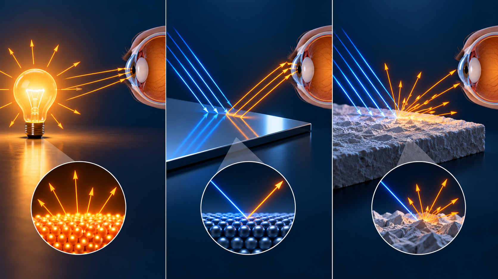
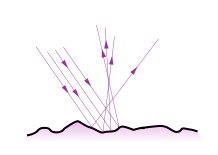
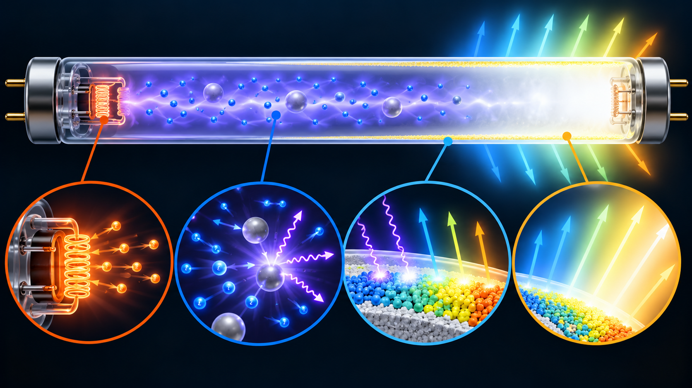
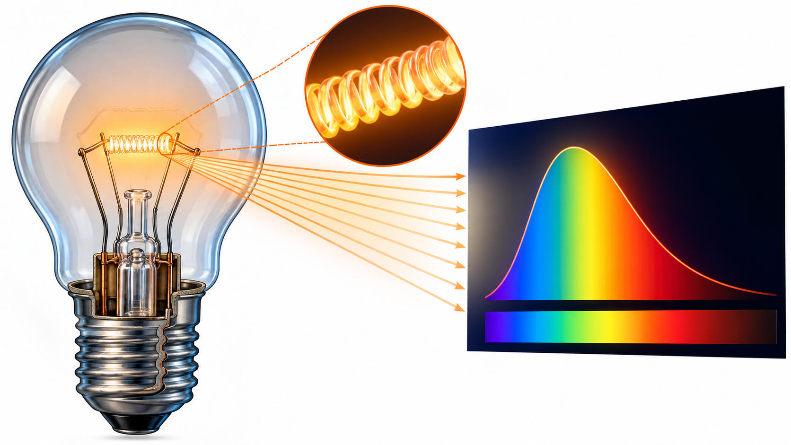

Obiettivi
- Distinguere emissione di luce e visibilità per riflessione.
- Confrontare riflessione speculare e diffusa.
- Descrivere incandescenza, scarica e fluorescenza.
- Distinguere spettro, colore, resa cromatica ed efficacia luminosa.
Qual è la differenza fra sorgente primaria e secondaria?
Livello intuitivo: Una sorgente primaria produce luce, come il Sole, una fiamma o una lampadina accesa. Una sorgente secondaria viene vista perché rimanda luce ricevuta: la Luna e un foglio illuminato sono esempi comuni.
Per essere maggiormente rigorosi: La distinzione didattica riguarda l’origine della luce visibile osservata. Un corpo illuminato può riflettere e diffondere radiazione; non occorre che produca quella stessa luce per essere visibile. Tutti i corpi emettono anche radiazione termica in misura dipendente dalla temperatura, ma a temperatura ambiente questa è soprattutto infrarossa e non li rende sorgenti primarie visibili.
Emissione, riflessione e fluorescenza
Livello intuitivo: Uno specchio rimanda luce senza generare il suo colore da zero. Un materiale fluorescente assorbe invece radiazione e ne riemette una parte con caratteristiche diverse.
Per essere maggiormente rigorosi: La fluorescenza è una forma di emissione indotta, da distinguere dalla sola riflessione. La classificazione primaria/secondaria non deve nascondere il processo fisico effettivo.

Riflessione speculare e diffusa
Livello intuitivo: Una superficie liscia come uno specchio rimanda i raggi in direzioni ordinate. Una superficie ruvida li distribuisce in molte direzioni, rendendosi visibile da più punti di osservazione.
Per essere maggiormente rigorosi: La riflessione speculare segue la legge locale rispetto alla normale. La diffusione può derivare da microstruttura superficiale o processi interni. Una superficie reale può combinare una componente speculare e una diffusa. “Diffusa” non significa che la luce debba distribuirsi uniformemente in tutte le direzioni.

Incandescenza
Perché un filamento caldo emette luce?
Livello intuitivo: La corrente riscalda un filamento di tungsteno. Quando è molto caldo emette anche luce visibile, ma una grande parte dell’energia è nell’infrarosso.
Per essere maggiormente rigorosi: L’emissione è termica e ha uno spettro ampio. Il filamento reale non è un corpo nero perfetto. Aumentando la temperatura cambia la distribuzione spettrale. Il gas di riempimento e, nelle lampade alogene, il ciclo chimico riducono il deterioramento del filamento.
Lampada fluorescente
Come si trasforma ultravioletto in luce visibile?
Livello intuitivo: Una scarica elettrica nel tubo produce soprattutto ultravioletto. Il rivestimento interno assorbe quella radiazione e riemette luce visibile.
Per essere maggiormente rigorosi: La scarica nel vapore di mercurio eccita gli atomi. I materiali fluorescenti del rivestimento, chiamati fosfori, convertono una parte dell’UV. Il termine non indica necessariamente l’elemento chimico fosforo. Lo spettro finale dipende da righe della scarica e bande dei materiali di conversione.

Il ruolo dell’alimentazione
Livello intuitivo: Il tubo ha bisogno di un circuito che controlli la corrente e permetta l’accensione. Non si comporta come un semplice filo resistivo.
Per essere maggiormente rigorosi: Il ballast limita la corrente della scarica e gestisce il funzionamento secondo il tipo di lampada. Accensione e variazioni temporali della luce dipendono dal circuito. Non possiamo attribuire le stesse prestazioni a tutti i sistemi fluorescenti.
Dispendio energetico delle sorgenti
Perché l’incandescenza consuma molto?
Livello intuitivo: La lampadina deve mantenere il filamento molto caldo. Una grande parte dell’energia finisce in infrarosso e in calore ceduto all’ambiente, anziché in luce visibile utile.
Per essere maggiormente rigorosi: La potenza elettrica, in watt, indica la velocità di consumo dell’energia. Il flusso luminoso, in lumen, descrive la luce pesata con la sensibilità visiva. Per confrontare i consumi servono flussi luminosi simili, non watt uguali. Le sorgenti fluorescenti e LED possono fornire lo stesso flusso con meno potenza elettrica; il risultato dipende dal prodotto e dalle condizioni.

Un esempio di consumo
Confrontiamo, come esempio didattico a flusso luminoso simile, una lampada a incandescenza da e una LED da , accese per .
Livello intuitivo: In questo confronto la LED usa 51 kWh in meno. Il risparmio riguarda l’energia usata per lo stesso compito luminoso, non un’energia “creata” dalla lampada.
Per essere maggiormente rigorosi: I due valori di potenza sono un esempio, non una conversione universale fra tecnologie. Per un confronto reale vanno letti flusso, distribuzione, qualità del colore, driver e condizioni d’uso. I costi dipendono anche dalla tariffa, che qui non assumiamo.
Come confrontare le sorgenti?
Livello intuitivo: Due lampade che sembrano bianche possono rendere diversi i colori degli oggetti. La potenza elettrica non dice da sola quanta luce utile arriva.
Per essere maggiormente rigorosi: Lo spettro è la distribuzione dell’energia con la lunghezza d’onda. Colore apparente, temperatura di colore e resa cromatica descrivono aspetti diversi. L’efficacia luminosa in confronta flusso luminoso e potenza, con la sensibilità visiva incorporata nel flusso. Non coincide con la sola efficienza di conversione in radiazione.